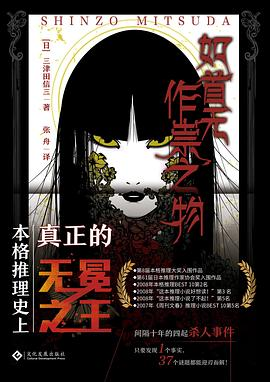
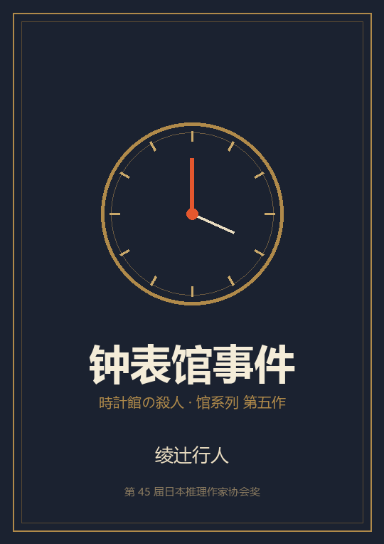
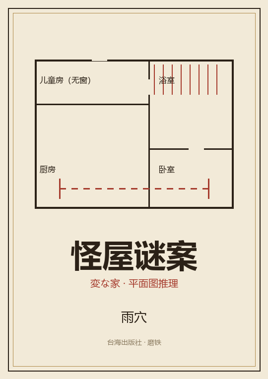

如首无作祟之物
战时的媛首村，秘守一族的双胞胎、无头女鬼的传说、接连被斩首的死者—— 以及一个「只要发现一个事实，所有谜团都会解开」的承诺。三重解答、两层真相， 本格推理的教科书级结构。
进入解说 →A LIBRARY FOR READERS WHO LOVE TO BE SPOILED
这里不是书评站，而是一座「解说图书馆」：每本书都被拆成舞台、人物、案件、诡计与真相， 配图、配时间线、配关系网。适合读完之后来对答案，也适合想先被剧透再决定要不要读的人。

战时的媛首村，秘守一族的双胞胎、无头女鬼的传说、接连被斩首的死者—— 以及一个「只要发现一个事实，所有谜团都会解开」的承诺。三重解答、两层真相， 本格推理的教科书级结构。
进入解说 →

本馆内容以原作小说为基础整理，参考了出版社解说、榜单资料与公开书评； 每页末尾都列出资料来源。解说是二次创作，不是原文摘录——想看完整故事，还是请支持正版。